Toca una imagen, la estrella o las franjas
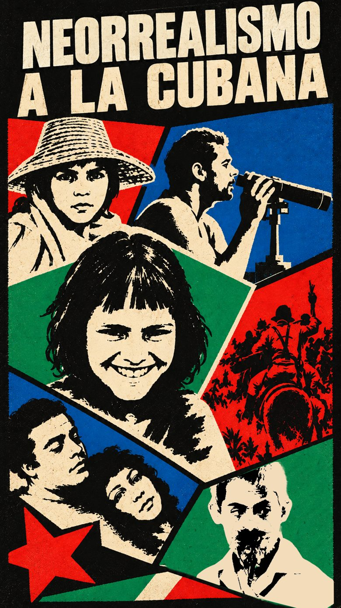
NEORREALISMO A LA CUBANA · CINE · CUBA · ITALIA
Gutiérrez Alea y García Espinosa estudian cine en el Centro Sperimentale di Cinematografia. Conocen directamente el neorrealismo.
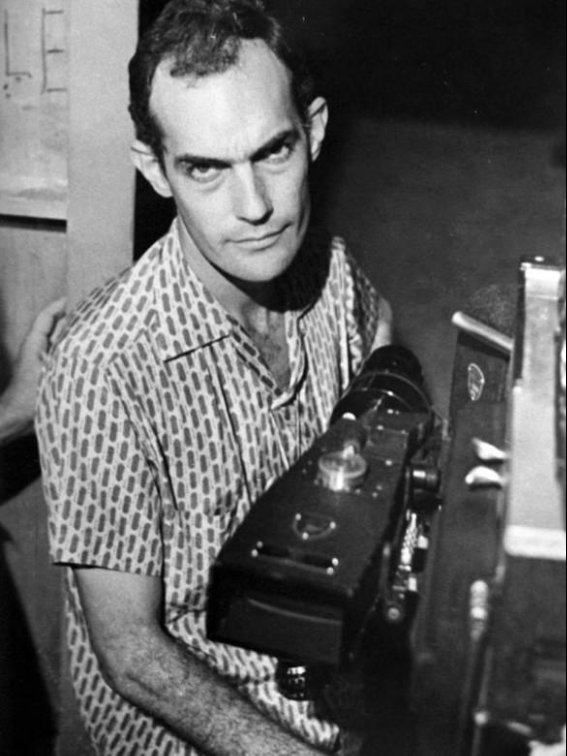
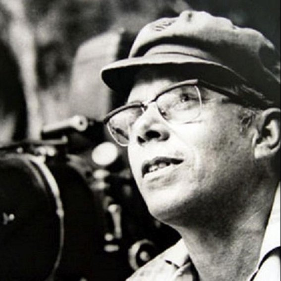
Zavattini visita la isla. Nuestro Tiempo organiza debates sobre el neorrealismo. En 1955 aparece El Mégano, primer gran experimento cubano de esta estética.
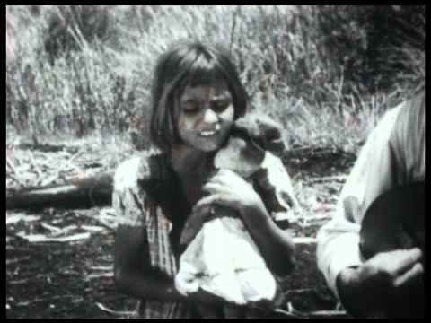
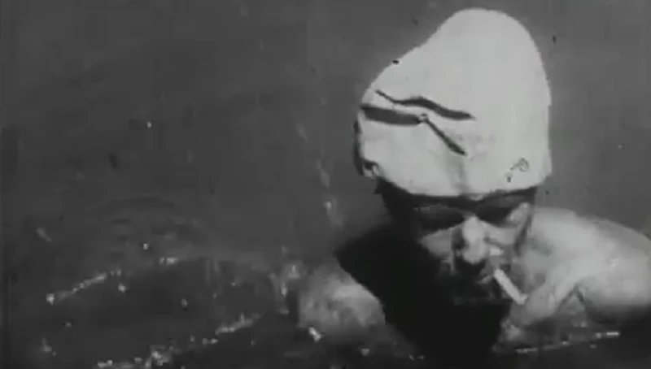
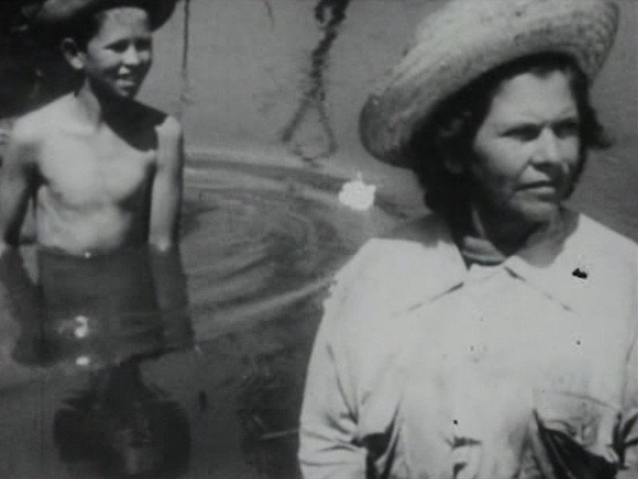
Se funda el ICAIC. Zavattini regresa a Cuba. Martelli y Arturo Zavattini participan en Historias de la Revolución. El neorrealismo se convierte en una herramienta para fundar el nuevo cine nacional.
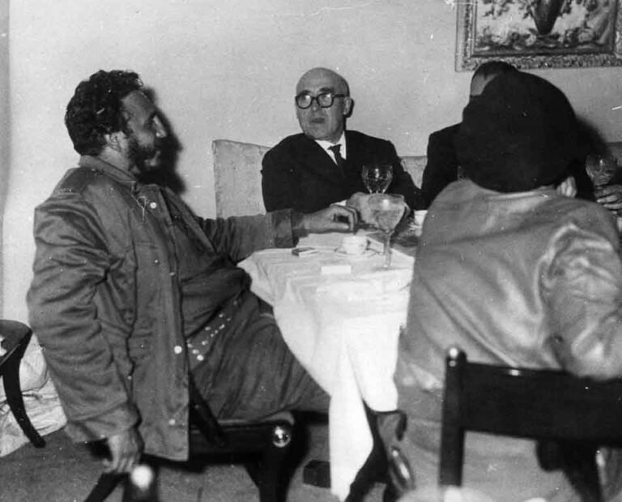
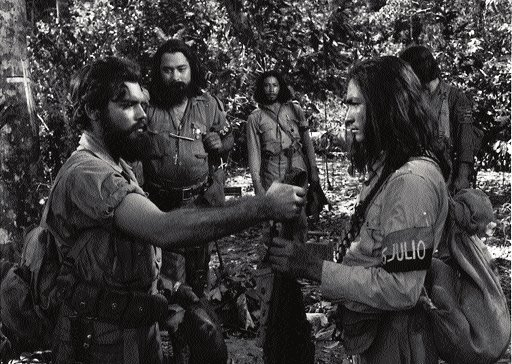
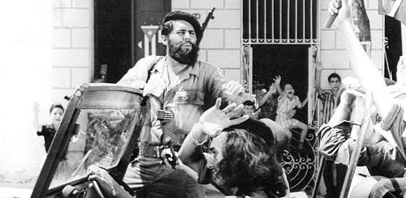
El joven rebelde revela las diferencias entre el modelo italiano y las necesidades del cine revolucionario cubano.
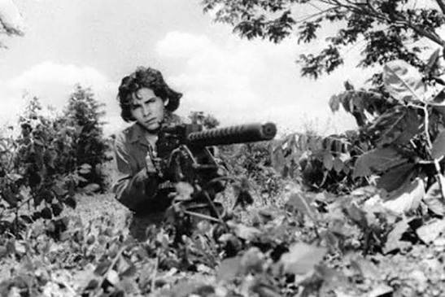
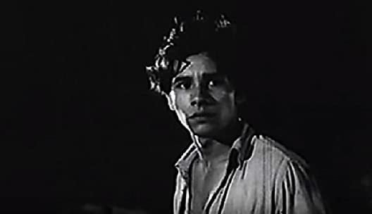
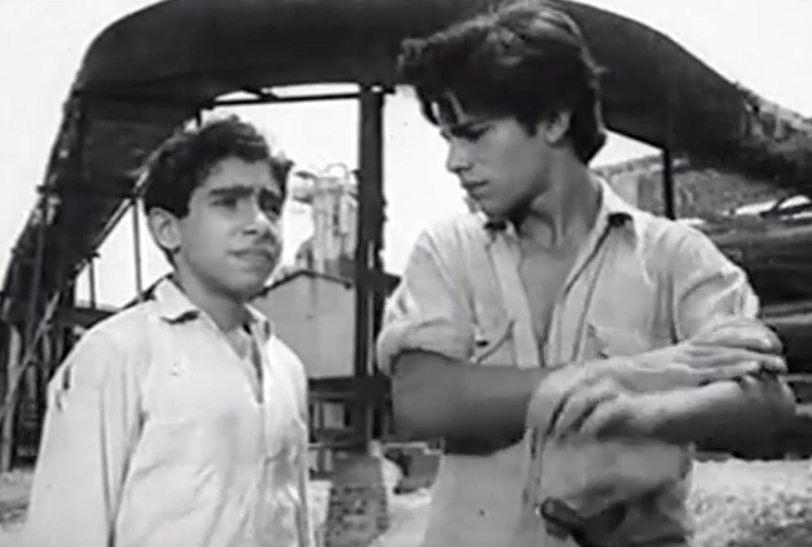
Los cineastas cubanos abandonan el modelo neorrealista como fórmula, pero conservan y transforman su legado: realidad social, documental, espacios cotidianos, personajes populares y voluntad crítica.
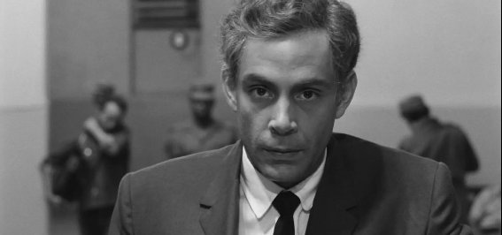
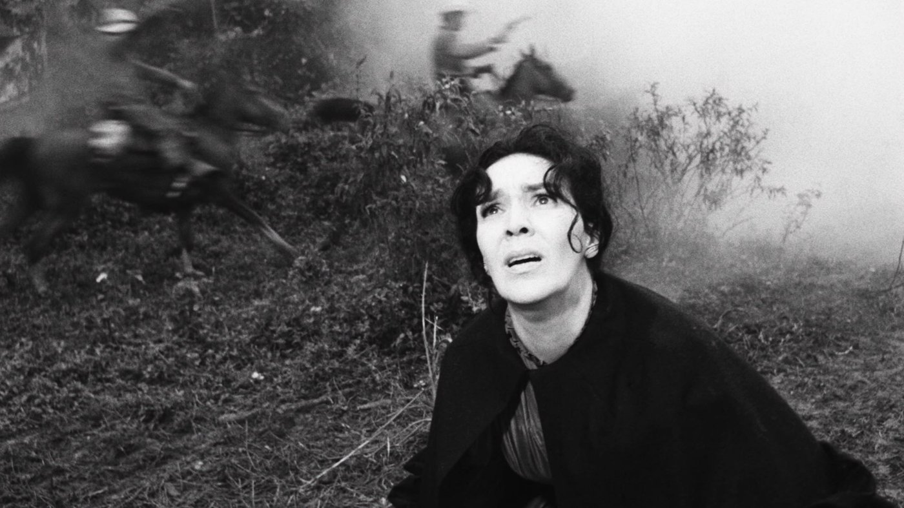
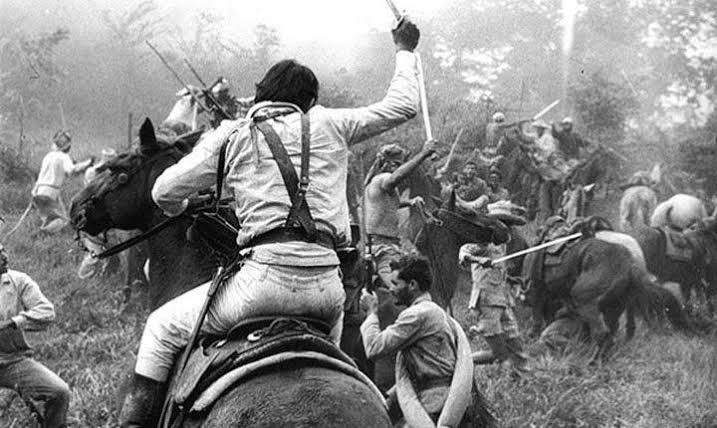
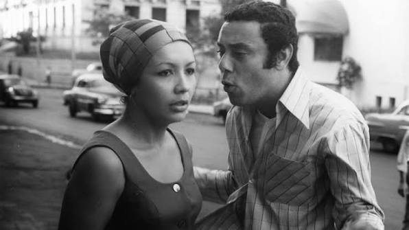
El neorrealismo italiano llegó a Cuba como una influencia extranjera y terminó convertido en una de las raíces de su cine nacional. Entre Roma y La Habana, entre Zavattini y los jóvenes cineastas cubanos, se produjo un intercambio que no terminó en imitación, sino en transformación: Cuba aprendió del neorrealismo a mirar su propia realidad y, finalmente, a construir un lenguaje cinematográfico propio.